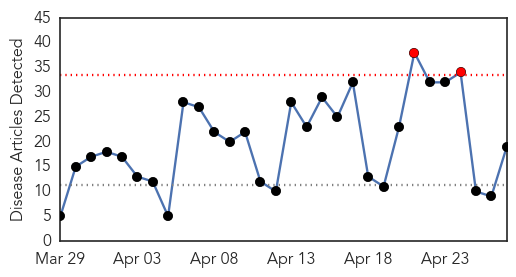

Influenza
30-Day Web Trend
2 alerts, 0 warnings

30-Day Twitter Trend
2 alerts, 0 warnings

Article Locations

Article Confidences

Top Articles:
- 0.997
- Minnesota National Guard helps combat bird flu outbreak
- 0.997
- Increased human protections offered as H5N2 outbreak spreads
- 0.996
- Tamiflu offered to poultry farm workers in Midwest as bird flu battle escalates
- 0.995
- Increased human protections offered as H5N2 outbreak spreads
- 0.983
- Increased human protections offered as H5N2 outbreak spreads
- 0.958
- Avian Flu FAQ
- 0.930
- Minnesota declares state of emergency over bird flu
- 0.806
- Avian flu confirmed in second North Dakota flock
- 0.801
- Midwest Canine Flu Outbreak Closes in on Iowa
- 0.759
- Veterinarians and doggie daycare centers prepare for canine flu
- 0.751
- April 26, 2015 Archives
- 0.751
- April 26, 2015 Archives
- 0.743
- National Guard joins avian influenza eradication efforts
- 0.710
- -UPDATE 3-New bird flu cases probable in Iowa, millions of birds affected -Iowa
- 0.709
- CORRECTED- -UPDATE 3-New bird flu cases probable in Iowa, millions of birds affected -Iowa
- 0.673
- US farms hit by bird flu – but a vaccine might make things worse
- 0.593
- U.S. Bird Flu Spreads to Egg-Laying Chickens in Minnesota County
- 0.578
- As avian flu spreads, officials mull options -- and Willmar waits
- 0.540
- Flu Strain Could Pose a Threat to Dogs Across Michigan [VIDEO]
Top Tweets:
-
No tweets found for Apr 27, 2015